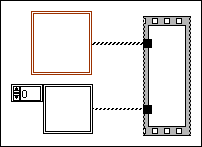

An array constant or a cluster constant on the block diagram has no elements. LabVIEW cannot determine the data type of the array or cluster constant.

To correct this error, complete the following steps.
Click the Show Error button in the Error list window to find the empty array or cluster constant. LabVIEW indicates untyped array constants by coloring them black and untyped cluster constants by coloring them brown.
Place a typed constant inside the array or cluster constant by moving an existing constant on the block diagram or by selecting one on the Functions palette. LabVIEW changes the color from black to the color of the new data type.